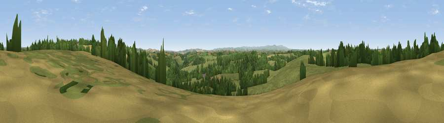

Viewpoint near Kennerleigh
#15534 in England · top 20% of its area beats it · near KennerleighWhere it is
The exact computed spot (SS 79875 09325). Click the marker for map links.
The view, rendered

A 360° render of this exact spot computed from the terrain model, tree cover and land cover — summer colours, afternoon light, calibrated against photographs of famous viewpoints. Real trees, hedges and buildings will differ in detail.
The panorama
Grey silhouette: terrain skyline in each direction (720 bearings, Earth curvature and refraction included). Dashed green: skyline with trees (+15 m) and buildings (+8 m) as obstacles. Blue strip: how far the ground is visible on each bearing.
Where the view opens
Wedge length = distance to the farthest visible ground on that bearing (vegetation-aware). Rings at 10, 25 and 50 km.
What fills the view
62% grassland · 23% woodland · 14% cropland
Angular shares of the visible panorama (visual magnitude), not map area. Landscape diversity 0.40 (0–1 Shannon).
Key numbers
More beautiful places nearby
The staircase of upgrades: each row has a higher view potential than everything closer. Driving times are estimates from straight-line distance, calibrated against real road routing — check an actual route before setting out.
| Place | Direction | Drive | Score |
|---|---|---|---|
| Viewpoint near Kennerleigh | ESE · 1 km | ~4 min | 57.6 |
| Viewpoint near Kennerleigh | S · 3 km | ~8 min | 58.7 |
| Viewpoint near West Sandford | S · 6 km | ~13 min | 63.5 |
| Woolsgrove Hill | S · 6 km | ~13 min | 64.0 |
| Viewpoint near Stockleigh Pomeroy | ESE · 11 km | ~20 min | 69.7 |
| Viewpoint near Stockleigh Pomeroy | SE · 11 km | ~20 min | 74.7 |
| Viewpoint near Stockleigh Pomeroy | ESE · 11 km | ~21 min | 78.9 |
| Viewpoint near Whitestone | SSE · 16 km | ~28 min | 79.8 |
50.87091, -3.70856 · source: screening · position refined by local search. Computed location — check access rights before visiting.